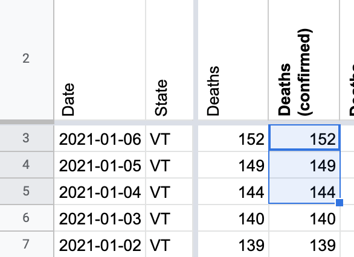
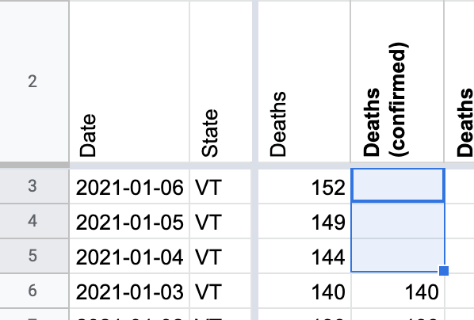
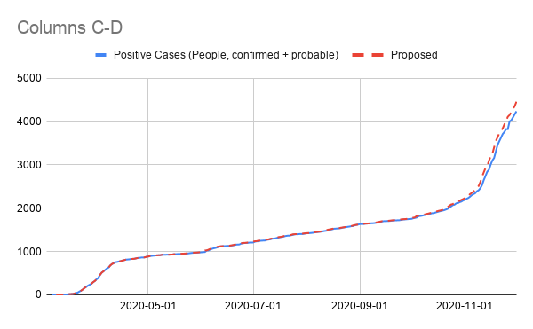
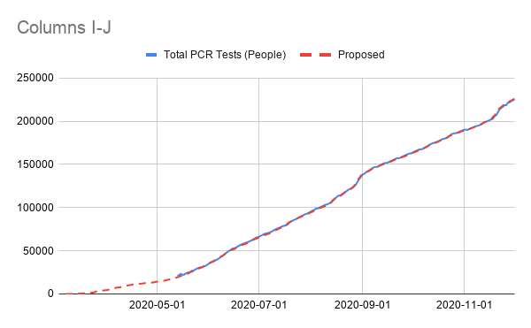
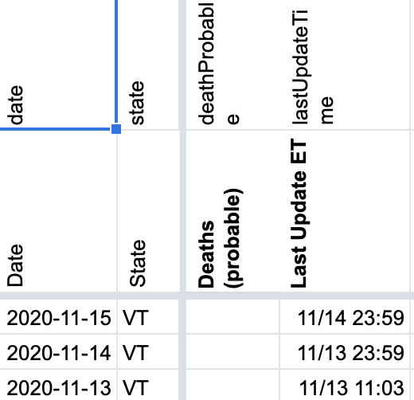
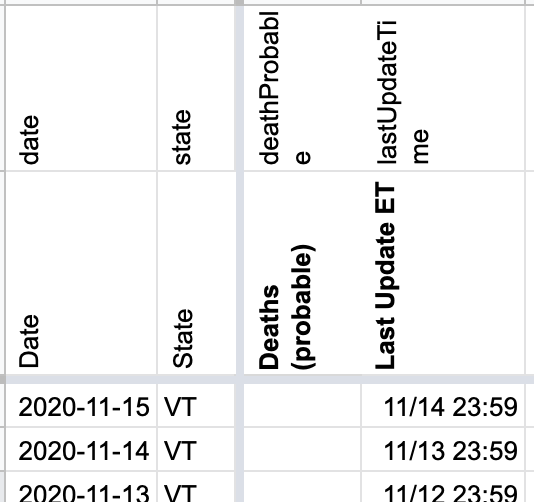
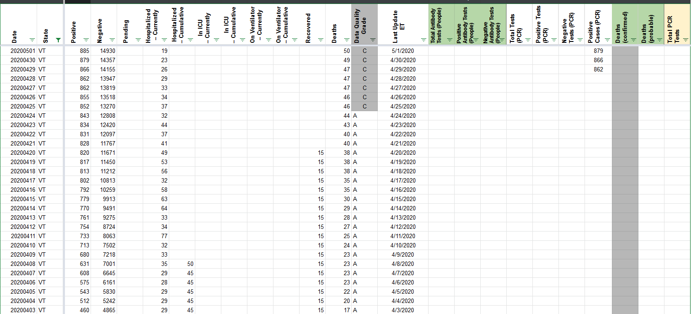
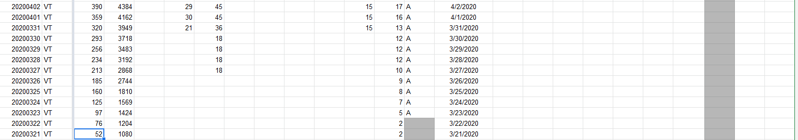
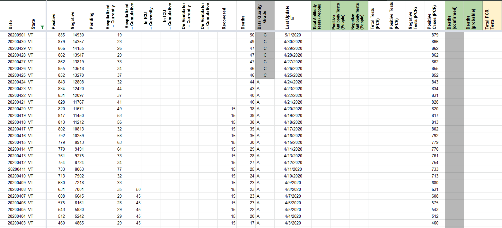
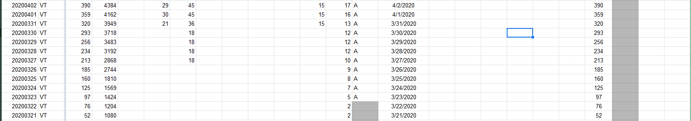

| Date | Number | Title |
|---|---|---|
| April 2, 2021, 6:41 AM PDT | 1141 | [VT] Carry over 12/8 confirmed cases |
| April 2, 2021, 6:41 AM PDT | 1141 | [VT] Carry over 12/8 confirmed cases |
| January 7, 2021, 3:54 PM PST | 1053 | [VT] Clear confirmed deaths from 1/4/21 onward |
| January 7, 2021, 3:54 PM PST | 1053 | [VT] Clear confirmed deaths from 1/4/21 onward |
| December 2, 2020, 10:32 AM PST | 991 | [VT] changes to VT's Positive (confirmed + probable) and Totals |
| November 16, 2020, 7:09 AM PST | 952 | [VT] Patch 11/13 timestamp |
| October 29, 2020, 1:17 PM PDT | 916 | [VT]Backfill Total Tests PCR from Vermont's website |
| July 13, 2020, 7:51 AM PDT | 616 | [VT] PCL Cases Historicals |
| May 26, 2020, 7:11 PM PDT | 457 | [VT Historicals]May 20th numbers |
| May 20, 2020, 12:52 PM PDT | 437 | Revise VT historical numbers to exclude serology tests |
| April 26, 2020, 9:36 AM PDT | 303 | Remove Historical VT recovered number which was entered errornously |
#1141: [VT] Carry over 12/8 confirmed cases
Issue number 1141
hmhoffman opened this issue on April 2, 2021, 6:41 AM PDT
State: VT
Dates affected: 12/08/20
Describe the issue: On December 12, 2020, we accidentally input Vermont's Cases (confirmed + probable) in their Confirmed cases for the day. We do not have coverage of confirmed cases from screenshots, and were not able to locate an archive of them, so we're carrying over their Confirmed cases for December 12, 2020.
Comments
#1141: [VT] Carry over 12/8 confirmed cases
Issue number 1141
hmhoffman opened this issue on April 2, 2021, 6:41 AM PDT
State: VT
Dates affected: 12/08/20
Describe the issue: On December 12, 2020, we accidentally input Vermont's Cases (confirmed + probable) in their Confirmed cases for the day. We do not have coverage of confirmed cases from screenshots, and were not able to locate an archive of them, so we're carrying over their Confirmed cases for December 12, 2020.
Comments
Rows edited: 1 VT 2020-12-08 positiveCasesViral: 4944 (was 5180)
#1053: [VT] Clear confirmed deaths from 1/4/21 onward
Issue number 1053
jaclyde opened this issue on January 7, 2021, 3:54 PM PST
Labels Data quality
State: Vermont
Issue: On January 4, 2020, Vermont posted that "the numbers of COVID-19 deaths now includes deaths among probable cases since September 6, 2020." Clearing confirmed deaths from January 4, 2021 onward.
Comments
Before: 
After: 
#1053: [VT] Clear confirmed deaths from 1/4/21 onward
Issue number 1053
jaclyde opened this issue on January 7, 2021, 3:54 PM PST
Labels Data quality
State: Vermont
Issue: On January 4, 2020, Vermont posted that "the numbers of COVID-19 deaths now includes deaths among probable cases since September 6, 2020." Clearing confirmed deaths from January 4, 2021 onward.
Comments
Before:
After:
#991: [VT] changes to VT's Positive (confirmed + probable) and Totals
Issue number 991
karaschechtman opened this issue on December 2, 2020, 10:32 AM PST
Labels Data quality
State or US: VT
Describe the problem Vermont is adding ~120 probables since September to its counts today, which previously were only confirmed. https://www.healthvermont.gov/sites/default/files/documents/pdf/Covid-19-Daily-Update.pdf They provide a cases timeseries where those probables are distributed over the full timeseries, so we are backfilling Positive so it doesn't appear as if cases rose by an additional 120 today.
As a bonus, we're also backfilling Total PCR Tests (People) with a by-result timeseries so that we can get more history — we only have it back to May but this will get us back to March.
Link to data source https://geodata.vermont.gov/datasets/vt-covid-19-daily-counts-table
Comments
 
We have a time series for probable cases. Updating positives (lumped), confirmed & probables. Multi-edit tool-PRODUCTION - VT-reb-20201204.csv.txt Multi-edit tool-PRODUCTION - VT-reb-20201204_post.csv.txt
#952: [VT] Patch 11/13 timestamp
Issue number 952
hmhoffman opened this issue on November 16, 2020, 7:09 AM PST
State: VT
Dates affected: 11/13
Describe the issue: On 11/13 we used 11/13 11:03 for the timestamp, but should have used 11/12 23:59 per text on the website "Case information is updated daily by 12:00pm ET, reflecting counts as of end of previous day."
Comments
BEFORE: 
AFTER: 
#916: [VT]Backfill Total Tests PCR from Vermont's website
Issue number 916
muamichali opened this issue on October 29, 2020, 1:17 PM PDT
Labels Data quality
State or US: Vermont
Describe the problem Vermont started publishing "Total Tests" on their dashboard today, and they provided a time series of this number going back to March 3rd. We are backfilling this data today.
Link to data source https://services1.arcgis.com/BkFxaEFNwHqX3tAw/ArcGIS/rest/services/V_EPI_LabSpecimensDaily_PUBLIC/FeatureServer/0
Comments
#616: [VT] PCL Cases Historicals
Issue number 616
qpmnguyen opened this issue on July 13, 2020, 7:51 AM PDT
Labels Backfill PCL/SVP Historicals
State or US: VT
Describe the problem
Positive Cases (PCR) data was only added on 4/29. Need to make sure to extend that data back as far as possible. According to screenshots, the state of VT provided clear annotation that cases are confirmed only since March 21st, and have continued to be exclusively confirmed cases until now.
 SOLUTION: Going to copy over values in the
SOLUTION: Going to copy over values in the Positive (Confirmed and Lumped) column to the Positive Cases (PCR) column from 3/21 - 4/28 (inclusive) to make sure this column captures our entire historical.
Link to data source https://covidtracking.com/screenshots/VT/VT-20200321-190955.png
Comments
BEFORE:


AFTER:


#457: [VT Historicals]May 20th numbers
Issue number 457
muamichali opened this issue on May 26, 2020, 7:11 PM PDT
Labels Historical Data not stale
testing numbers from 5/19 to 5/20
Comments
This issue has been automatically marked as stale because it has not had recent activity. It will be closed if no further activity occurs. Thank you for your contributions!
We will be able to fix this issue once https://github.com/COVID19Tracking/covid-public-api-build/issues/58 is resolved. The logic for calculating total tests may have caused this error.
This issue has been automatically marked as stale because it has not had recent activity. It will be closed if no further activity occurs. Thank you for your contributions!
This issue has been closed because it was stale for 15 days, and there was no further activity on it for 10 days. You can feel free to re-open it if the issue is important, and label it as "not stale."
Like @brianskli said above, this seems to be an issue with the positive+negative logic. Since we now report explicit totals for VT, so I'm closing this issue.
#437: Revise VT historical numbers to exclude serology tests
Issue number 437
kissane opened this issue on May 20, 2020, 12:52 PM PDT
Labels Historical Data
https://twitter.com/EPetenko/status/1263194375133241344
Erin is in the Slack and presumably flagged this somewhere, IDK
Comments
Thank you @kissane! I found Erin's post in slack. We are going to revise VT numbers based on the link she provided https://geodata.vermont.gov/datasets/vt-covid-19-daily-counts-table/data?orderBy=date&orderByAsc=false
This spreadsheet contains:
[1] Current values of VT historicals [2] Before and After values for positives, negatives, and last updated columns for VT I made the update in States Daily. It should be reflected on the API/website in an hour.
#303: Remove Historical VT recovered number which was entered errornously
Issue number 303
muamichali opened this issue on April 26, 2020, 9:36 AM PDT


Rows edited: 1 VT 2020-12-08 positiveCasesViral: 4944 (was 5180)